Bulletins neige · Limite pluie-neige
Des bulletins neige quotidiens pour les skieurs : où est la neige, ce qui arrive et où skier, d'après la carte de neige SnowScope et les stations de mesure. Chaque chiffre vient des données du jour.

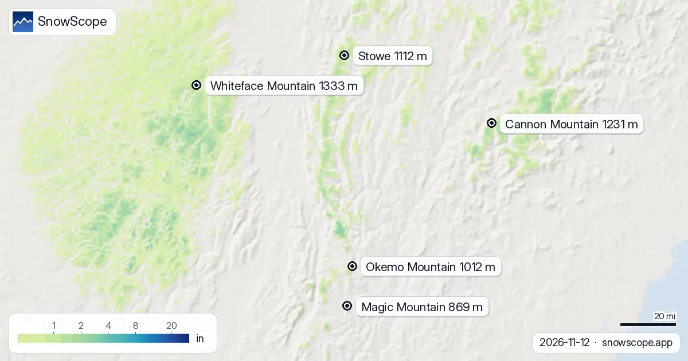
Notre prévision met l'isotherme 0 °C dans le Nord-Est américain entre 0 ft (0 m) et 4 593 ft (1 400 m) dans les jours à venir. Le jeudi 12 novembre, …

Entre 1 380 m et 3 410 m : c'est là que notre prévision place l'isotherme 0 °C dans l'Ouest canadien ces prochains jours. Aux heures les plus douces, …

Les cartes du jour regardent deux semaines devant dans les Pyrénées, du 13 novembre au 26 novembre. Elles viennent de les deux modèles mondiaux qui …

Où va-t-il neiger dans le Nord-Est américain entre le 13 novembre et le 26 novembre, et combien ? Nous avons interrogé les deux modèles mondiaux qui …

Quatorze jours de neige fraîche sur une carte, du 13 novembre au 26 novembre, pour chaque montagne dans l'Ouest canadien : c'est ce qu'attendent les …
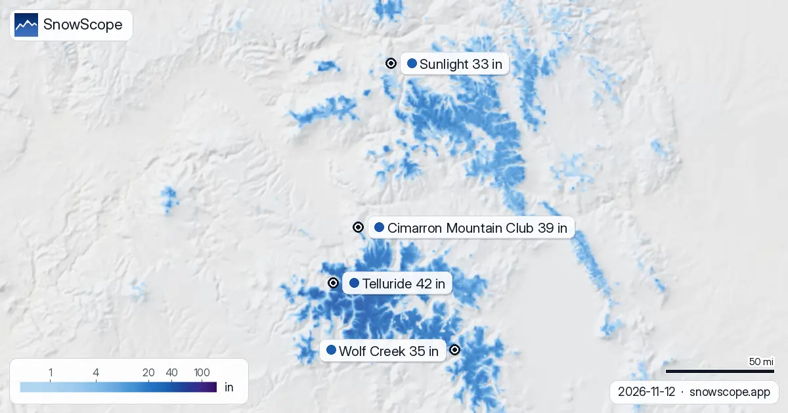
À Telluride, l'altitude change tout : notre modèle donne 0 in (0 cm) en bas (8 734 ft / 2 662 m), 2 in (6 cm) à mi-pente (10 620 ft / 3 237 m) et …
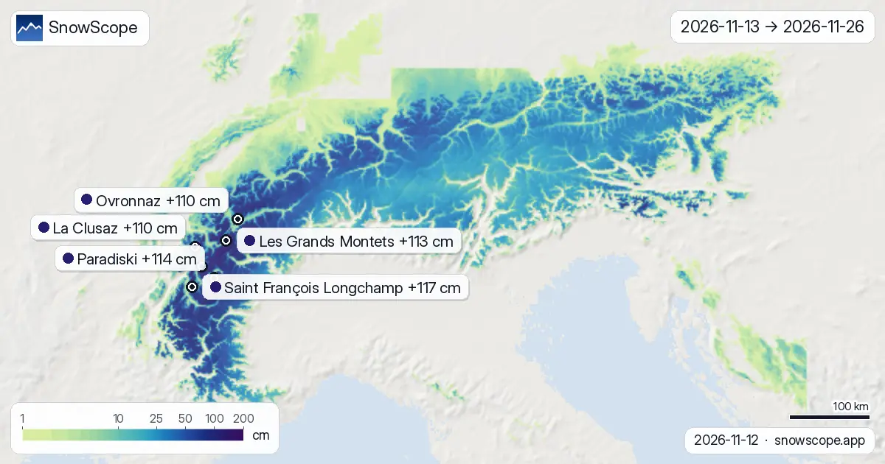
Voici les nouvelles cartes des deux prochaines semaines dans les Alpes, du 13 novembre au 26 novembre : la neige fraîche attendue sur le relief, lue …
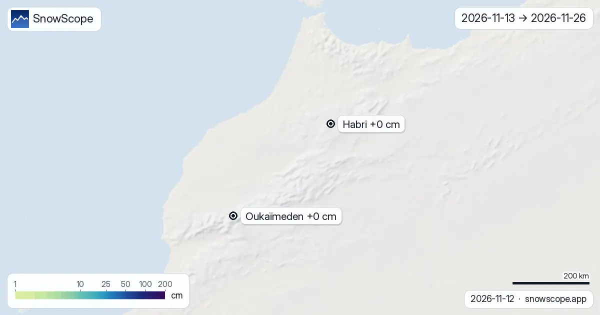
Voici les nouvelles cartes des deux prochaines semaines dans l'Atlas (Maroc), du 13 novembre au 26 novembre : la neige fraîche attendue sur le …
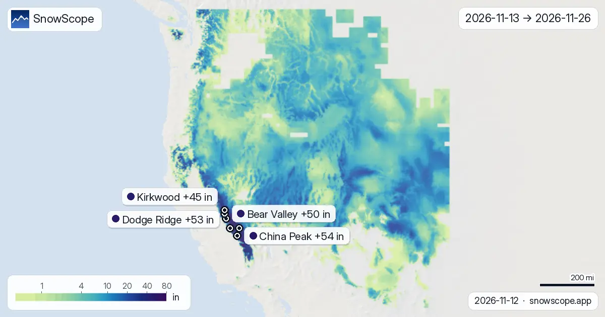
Nos cartes à deux semaines montrent où la neige fraîche devrait tomber dans l'Ouest américain entre le 13 novembre et le 26 novembre, d'après les …
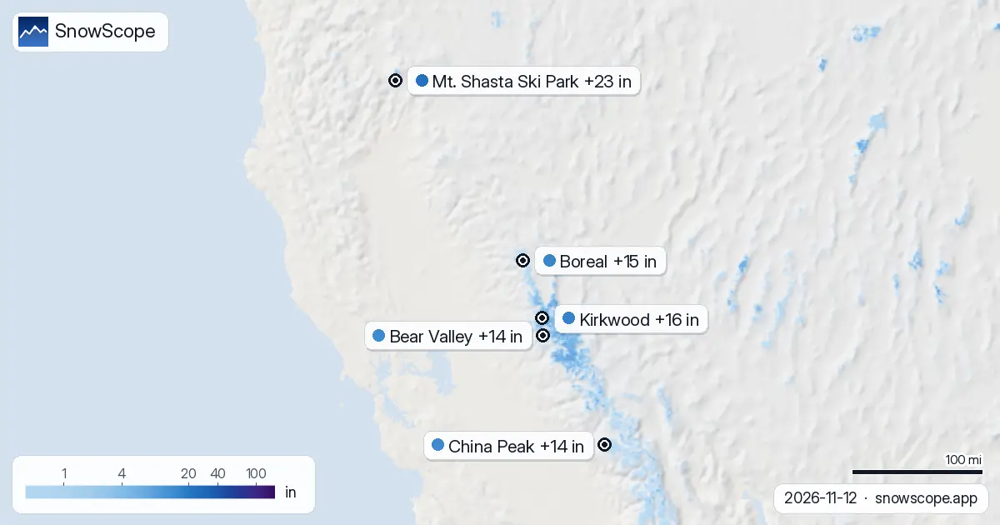
Kirkwood, tendance neige : jusqu'à 16 in possibles d'ici le 15 novembre (Ouest américain). D'ici le 15 novembre, notre prévision donne 23 in (58 cm) …

Mount Cain Alpine Park : combien de neige arrive ? 37 cm d'ici le 15 novembre. Combien de neige arrive dans l'Ouest canadien, et où ? D'ici le 15 …

Bulletin neige dans les Pyrénées, 12 novembre. D'ici le 15 novembre, la prévision apporte 33 cm à Cauterets Cirque du Lys, 29 cm à Piau-Engaly et …

Les Deux Alpes, prévisions neige comparées à la région : 51 cm d'ici le 14 novembre. La surface enneigée est passée de 45 820 km² le 9 novembre à …

Bulletin neige dans les Alpes, 11 novembre. Trois données, une sélection : la hauteur de neige du jour, la neige fraîche des 72 dernières heures et …
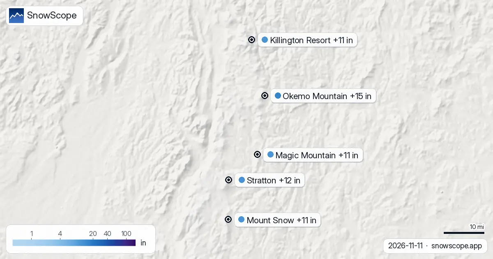
Bulletin neige dans le Nord-Est américain, 11 novembre. D'ici le 14 novembre, la prévision donne 15 in (38 cm) à Okemo Mountain, 12 in (30 cm) à …
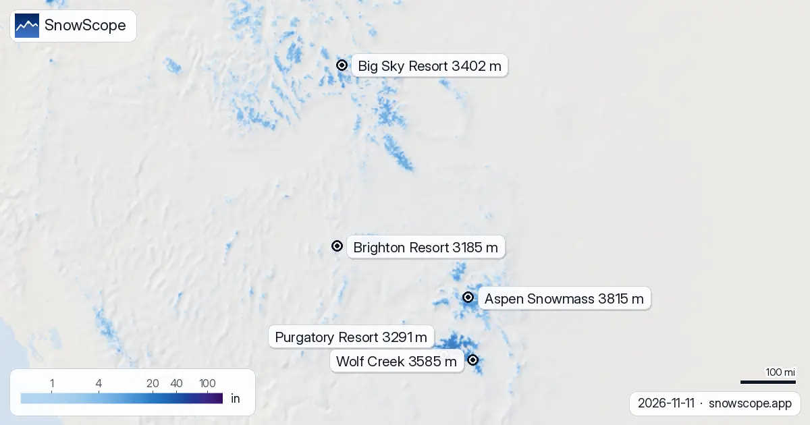
Ces prochains jours, l'isotherme 0 °C dans l'Ouest américain devrait bouger entre 8 333 ft (2 540 m) et 13 780 ft (4 200 m), selon notre prévision. …

Bulletin neige dans l'Ouest américain, 11 novembre. D'ici le 14 novembre, la prévision donne 17 in (43 cm) à Mt. Shasta Ski Park, 15 in (39 cm) à …

Où aller skier dans l'Ouest américain ? Trois données, une sélection : la hauteur de neige du jour, la neige fraîche des 72 dernières heures et la …

Nous avons pesé la neige déjà au sol, la neige fraîche des 72 dernières heures et ce qu'ajoute la prévision, et retenu Whistler Blackcomb, Tweedsmuir …

Notre modèle de neige prévoit jusqu'à 58 cm de neige fraîche pour La Grave, France, d'ici le samedi 14 novembre 2026. Découvrez où d'autre la neige est attendue.
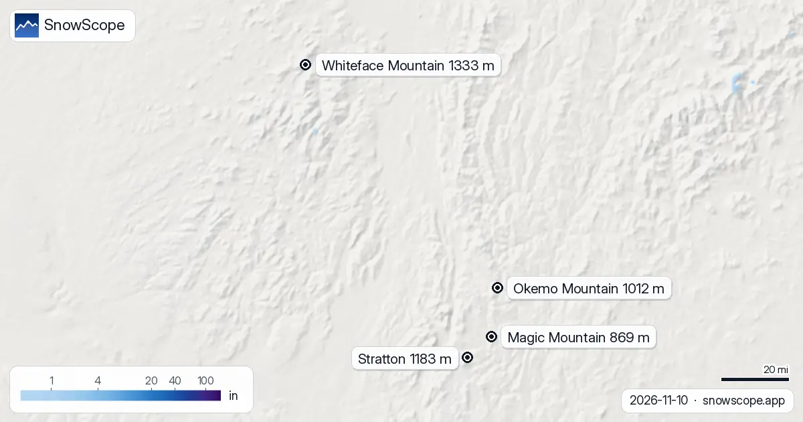
L'isotherme 0 °C dans le Nord-Est américain, prochains jours : 1 936 ft (590 m) à 6 037 ft (1 840 m). Heures les plus douces : limite pluie-neige …
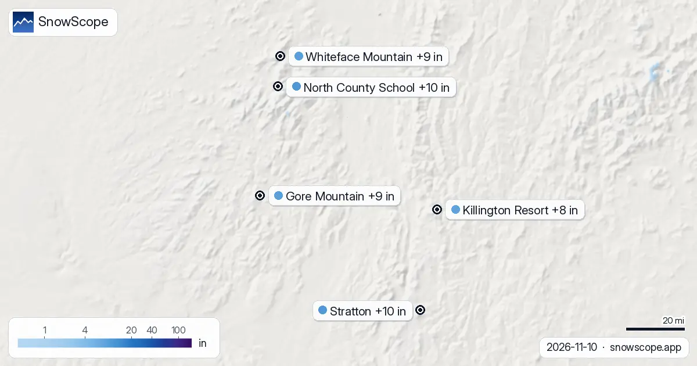
La surface blanche a changé : 676 sq mi (1 750 km²) le 8 novembre, 42 sq mi (110 km²) aujourd'hui, et 12 668 sq mi (32 810 km²) attendus le 13 …

Whistler Blackcomb a reçu 75 cm de neige nouvelle au sommet en une semaine, puis une tempête douce avec 124 mm d'eau. Un guide simple sur la sous-couche, la neige fraîche, la pluie et la croûte.

L'isotherme 0 °C dans les Pyrénées, prochains jours : 2 420 m à 3 710 m. La limite pluie-neige, environ 300 m plus bas, culmine à 3 400 m à Masella …

Jusqu'à 37 cm : c'est ce que notre prévision donne à Piau-Engaly d'ici le 13 novembre. D'ici le 13 novembre, notre prévision donne 37 cm à …

Chaque jour, nous listons les stations qui devraient recevoir le plus de neige fraîche, dans les 24 prochaines heures et jusqu'au 13 novembre, en …


50 cm en haut du domaine : voilà pourquoi La Grave est en tête de notre liste. Nous avons combiné la hauteur de neige du jour, la neige fraîche des …

Notre prévision met l'isotherme 0 °C dans les Pyrénées entre 2 610 m et 3 840 m dans les jours à venir. Au moment le plus doux de la journée, la …

Où aller ces prochains jours ? Voici les stations où la prévision annonce le plus de neige fraîche dans les 24 prochaines heures et jusqu'au 11 …


Une tempête du Pacifique humide : 92 cm de neige fraîche sur les pistes hautes de Whistler du 8 au 10 novembre, pluie en dessous d'environ 1 620 m.

Air doux pour les prochaines pluies et chutes de neige : la limite pluie-neige se situe surtout entre 2 190 et 2 850 m. Carte, graphique et animation.

Limite pluie-neige proche de 3 710 m du 8 au 12 novembre : pluie à Oukaïmeden et Imlil, neige au sommet du Toubkal. Carte et graphique.

D'ici le 10 novembre, notre prévision donne 103 cm à Whistler Blackcomb, 99 cm à Ski Callaghan et 74 cm à Mount Cain Alpine Park. Les chiffres des …
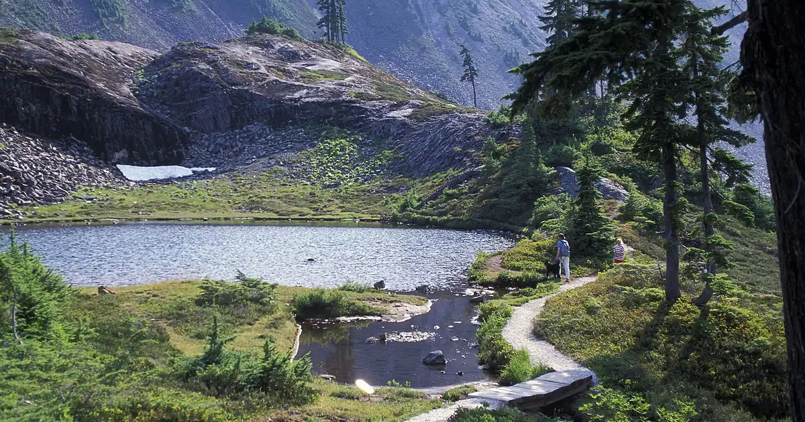
D'ici le 10 novembre, notre prévision donne 21 in (53 cm) à Mt Baker, 7 in (18 cm) à Mt. Hood Meadows et 6 in (14 cm) à Hurricane Ridge. Les chiffres …

Environ 65 mm sur le Toubkal d'ici le 12 novembre, mais l'isotherme 0 °C reste vers 4 000 m : pluie à Oukaïmeden et dans les vallées, neige au sommet seulement.

D'ici le 10 novembre, notre prévision donne 36 cm à Orcières Merlette, 33 cm à Les Deux Alpes et 32 cm à La Grave. Les chiffres des stations de ski …

Le tableau du jour classe les stations d'Europe, du Maroc et d'Amérique du Nord selon la neige fraîche prévue dans les 24 prochaines heures et …
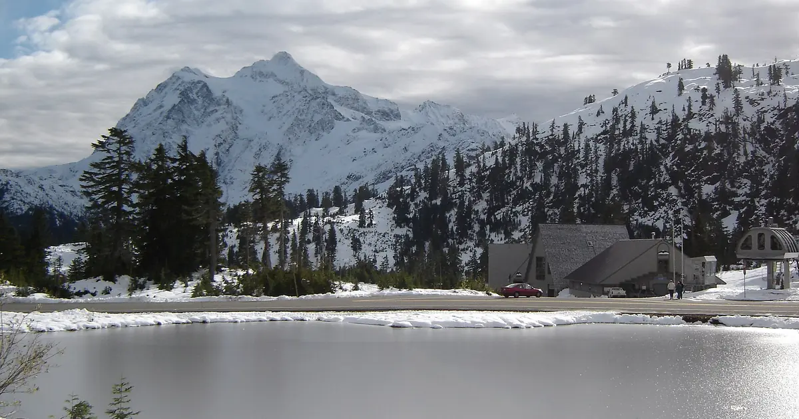
D'ici le 9 novembre, notre prévision donne 13 in (33 cm) à Mt Baker, 5 in (12 cm) à Hurricane Ridge et 4 in (10 cm) à Mt. Hood Meadows. Les chiffres …

D'ici le 9 novembre, notre prévision donne 4 in (11 cm) à Ski Eldorado et 4 in (10 cm) à Tuckerman Ravine. Les chiffres des stations de ski sont des …

D'ici le 9 novembre, notre prévision donne 74 cm à Whistler Blackcomb, 63 cm à Ski Callaghan et 50 cm à Mount Cain Alpine Park. Les chiffres des …

Nous avons combiné la hauteur de neige du jour, la neige fraîche des 72 dernières heures et la prévision pour retenir Isola 2000, Artesina et …

Nous avons combiné la hauteur de neige du jour, la neige fraîche des 72 dernières heures et la prévision pour retenir Aramón Cerler, Rasos de Peguera …

Combien de neige les montagnes vont-elles gagner ? Notre tableau montre les stations où la prévision annonce le plus de neige fraîche dans les 24 …
D'ici le 8 novembre, notre prévision donne 21 cm à Saas Grund, 18 cm à Grindelwald et 18 cm à Pescegallo. Les chiffres des stations de ski sont des …

Nous avons combiné la hauteur de neige du jour, la neige fraîche des 72 dernières heures et la prévision pour retenir Artesina, Isola 2000 et Riserva …

Nous avons combiné la hauteur de neige du jour, la neige fraîche des 72 dernières heures et la prévision pour retenir Rasos de Peguera, Aramón Cerler …
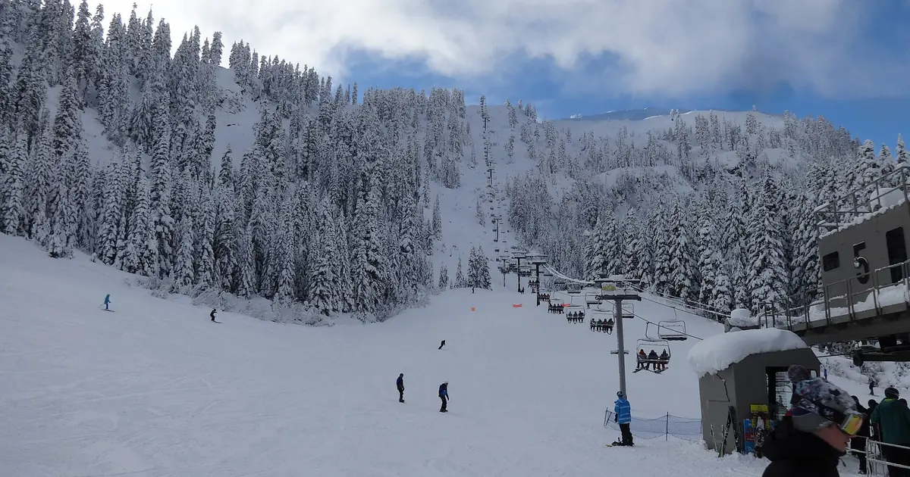
D'ici le 8 novembre, notre prévision donne 17 in (42 cm) à Mt Baker et 5 in (13 cm) à Hurricane Ridge. Les chiffres des stations de ski sont des …

Nous avons combiné la hauteur de neige du jour, la neige fraîche des 72 dernières heures et la prévision pour retenir Kendall Mountain, Telluride et …

D'ici le 8 novembre, notre prévision donne 94 cm à Whistler Blackcomb, 93 cm à Ski Callaghan et 70 cm à Tweedsmuir Ski Club. Les chiffres des …

Notre modèle de neige pour le 5 novembre 2026 prévoit jusqu'à 94 cm de neige fraîche dans l'Ouest canadien d'ici dimanche, avec d'importantes chutes de neige également dans les Alpes et l'Ouest américain.

Nous avons combiné la hauteur de neige du jour, la neige fraîche des 72 dernières heures et la prévision pour retenir Crissolo, Prali et La Grave. …

Nous avons combiné la hauteur de neige du jour, la neige fraîche des 72 dernières heures et la prévision pour retenir Masella, Cauterets Cirque du …

D'ici le 7 novembre, notre prévision donne 17 in (44 cm) à Mt Baker, 6 in (14 cm) à Crystal Mountain et 6 in (14 cm) à Stevens Pass. Les chiffres des …

D'ici le 7 novembre, notre prévision donne 48 cm à Ski Callaghan, 47 cm à Whistler Blackcomb et 34 cm à Mount Cain Alpine Park. Les chiffres des …

Nous avons combiné la hauteur de neige du jour, la neige fraîche des 72 dernières heures et la prévision pour retenir Mount Cain Alpine Park, …

Le tableau du jour classe les stations d'Europe, du Maroc et d'Amérique du Nord selon la neige fraîche prévue dans les 24 prochaines heures et …
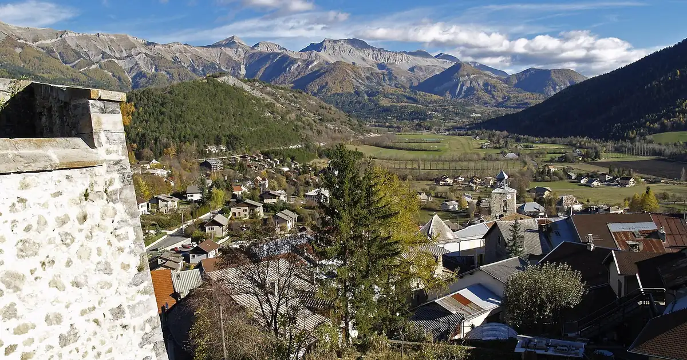
D'ici le 6 novembre, notre prévision donne 37 cm à Chabanon, 34 cm à Dévoluy et 33 cm à Chaillol. Les chiffres des stations de ski sont des …

Nous avons combiné la hauteur de neige du jour, la neige fraîche des 72 dernières heures et la prévision pour retenir Masella, Estació d'esquí de …

Nous avons combiné la hauteur de neige du jour, la neige fraîche des 72 dernières heures et la prévision pour retenir Silverton Mountain, Telluride …

D'ici le 6 novembre, notre prévision donne 33 cm à Ski Callaghan, 31 cm à Mount Cain Alpine Park et 25 cm à Whistler Blackcomb. Les chiffres des …

Chaque jour, nous listons les stations qui devraient recevoir le plus de neige fraîche, dans les 24 prochaines heures et jusqu'au 6 novembre, en …